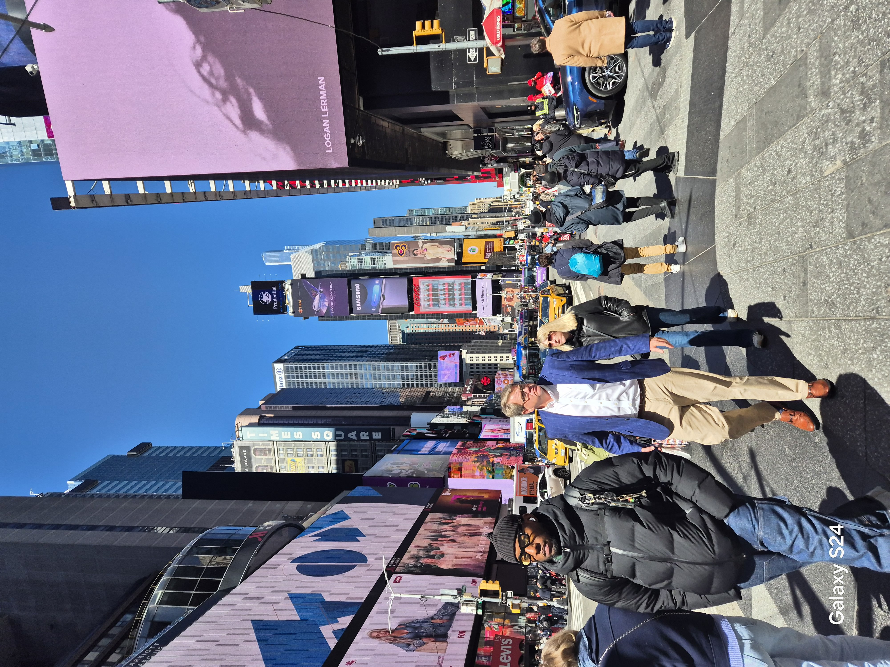
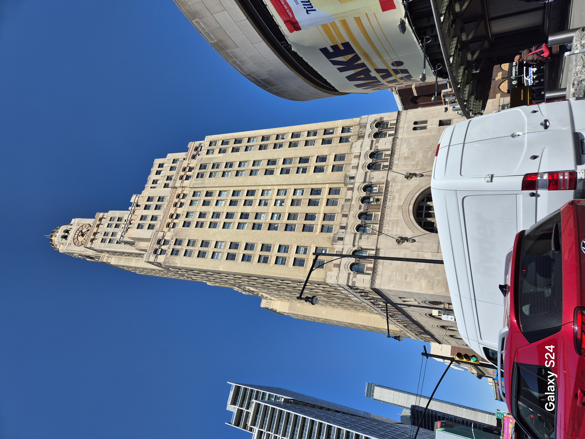
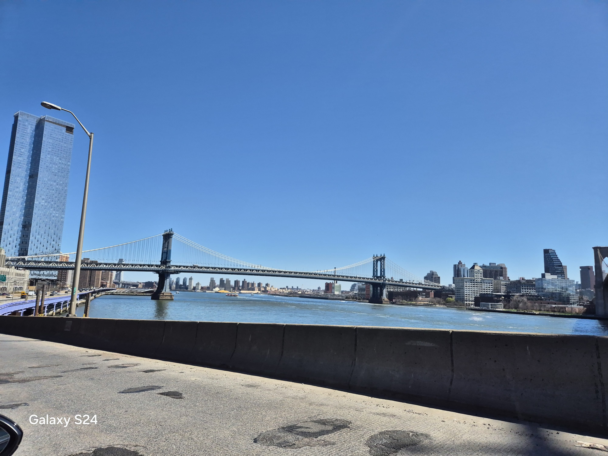
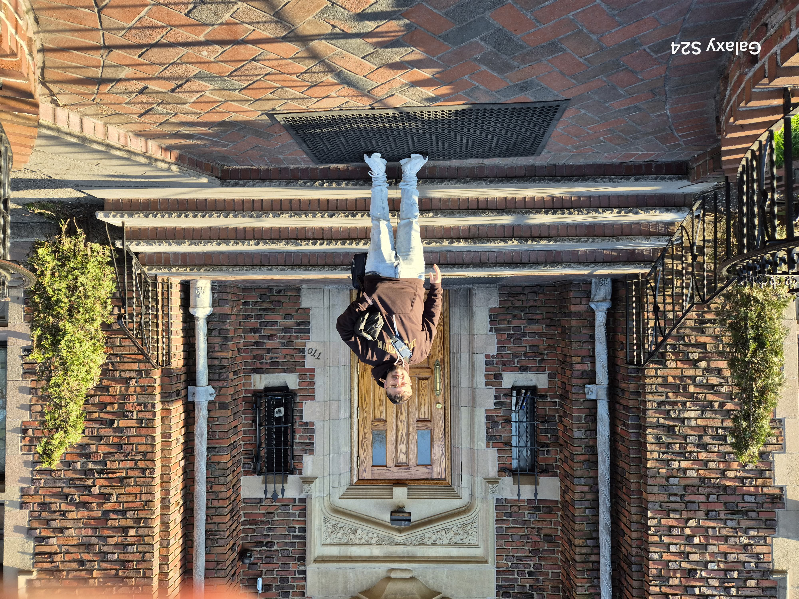
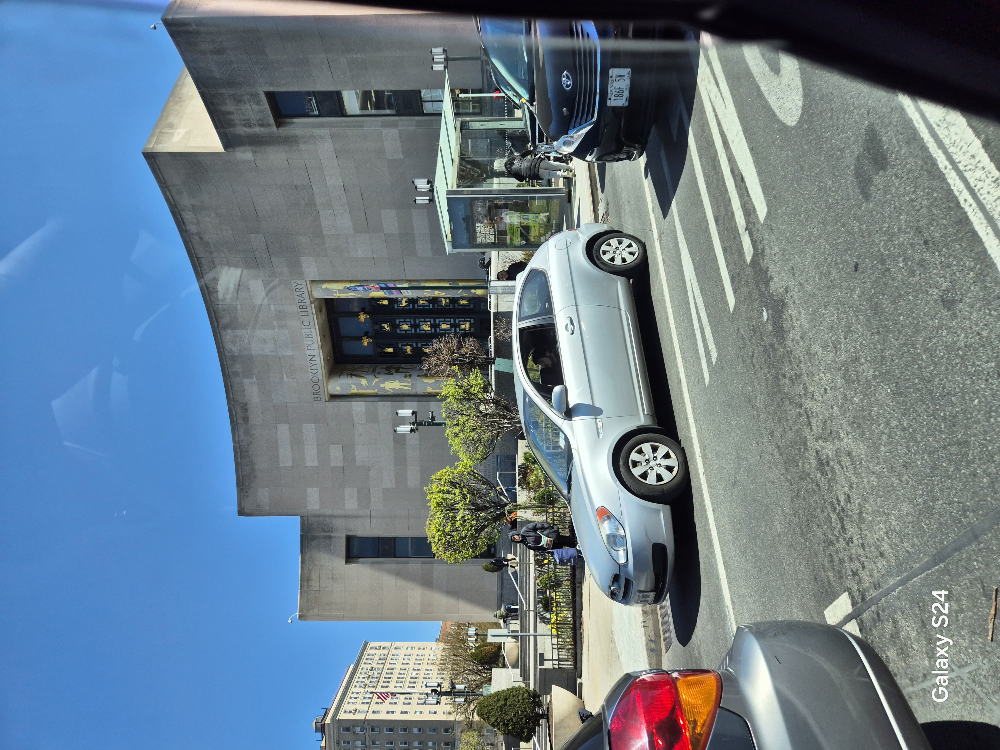
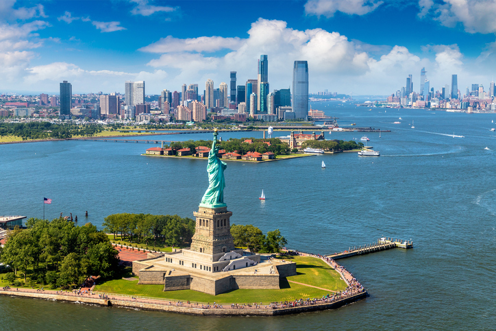
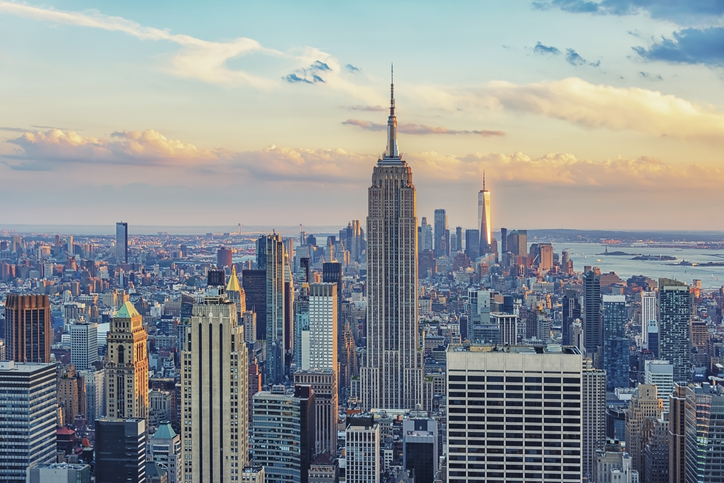
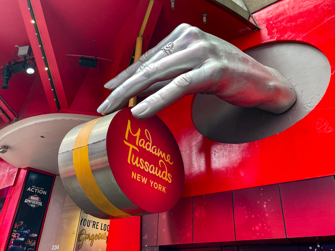
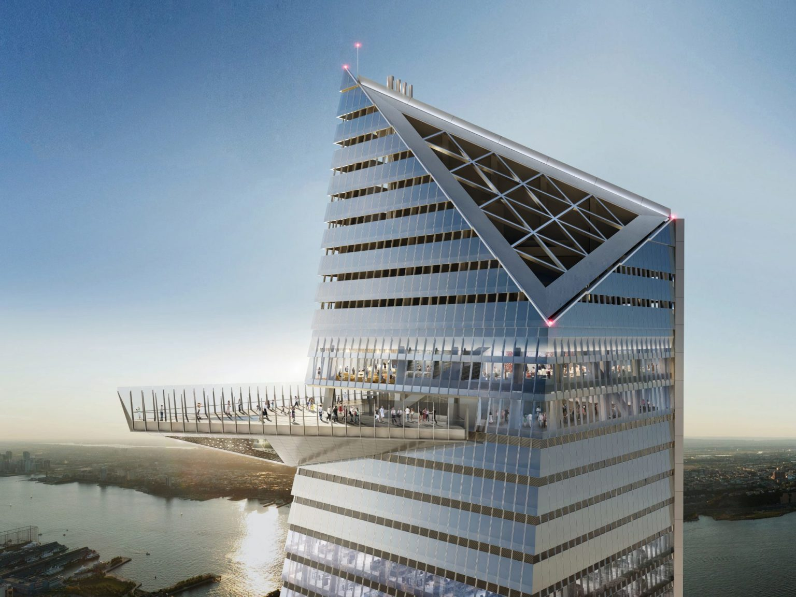

כאן התחיל המסע הגדול. ניוארק קיבלה אותנו עם בניינים ענקיים ומרשימים, ספרייה עצומה, פארקים יפים ואווירה של עיר שלא עוצרת לרגע. משם המשכנו לראות את מנהטן — גורדי שחקים, גשרים עצומים, ונופים שלא רואים כל יום.
כמובן שלא פספסנו את טיימס סקוור עם האורות והמסכים, וגם זכינו לבקר אצל הרבי מלובביץ' — חוויה מרגשת ומיוחדת.

טיימס סקוור הוא אחד המקומות המפורסמים בעולם, מלא אורות, מסכים ענקיים והמוני אנשים – הלב הפועם של מנהטן.

מנהטן היא הלב של ניו יורק – גורדי שחקים עצומים, רחובות מלאי חיים, נופים מרהיבים ואווירה שאין בשום מקום אחר בעולם.

אחד הגשרים המפורסמים בעולם – מחבר בין מנהטן לברוקלין, עם נוף מרהיב של קו הרקיע והליכה בלתי נשכחת מעל הנהר.

מנהיג רוחני בעל השפעה עצומה, דמות מרכזית בחסידות חב״ד, ומקום שמבקרים בו מכל העולם כדי לקבל השראה וברכה.

אחת הספריות המפורסמות בעולם – מבנה מרשים, אולמות ענקיים ואווירה תרבותית שמושכת אליה מבקרים מכל קצוות העולם.

אחד הסמלים הגדולים של ארצות הברית – פסל ענק ומרשים המייצג חירות, תקווה וקבלת פנים למהגרים שהגיעו לניו יורק לאורך השנים.

אחד הבניינים האייקוניים של ניו יורק – גורד שחקים מרשים עם תצפית מדהימה על כל מנהטן ונוף שלא שוכחים.

מוזיאון השעווה המפורסם בעולם, שבו אפשר לפגוש דמויות מפורסמות מכל הזמנים – שחקנים, זמרים, מנהיגים וגיבורי על, כולם מפוסלים בפרטים מדויקים ומדהימים.

אחת התצפיות הגבוהות והמרשימות בניו יורק – מרפסת זכוכית תלויה באוויר, עם נוף פנורמי עוצר נשימה של כל מנהטן והסביבה.